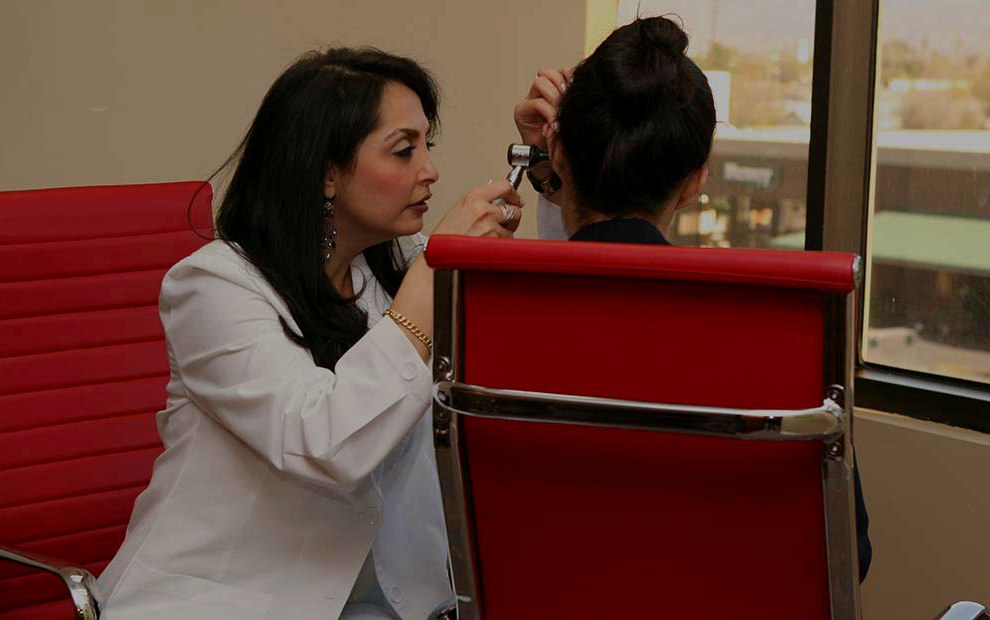

Learn & Know More About…
Click below to learn more about the care we are known for.
Provider FDA-Cleared
Lenire Tinnitus Treatment, Now Available in Sherman Oaks
Lenire is the first FDA-cleared bimodal neuromodulation device for tinnitus. Dr. Cohen is a designated Lenire provider and builds it into a complete tinnitus program, alongside Levo and Neuromonics, rather than handing you a single device.
Learn About LenireMobile Hearing Clinic
We come to you for hearing aid services.
Our Mobile Hearing Clinic brings advanced diagnostic technology and personalized care into the comfort of your own home, so patients with restricted mobility can still get the full evaluation, fitting, and follow-up experience.
If hearing loss has left you or a loved one feeling isolated, this is one of the most important ways we reconnect people with the voices and moments they have been missing. Dr. Cohen personally makes these visits across the greater Los Angeles area, including assisted-living communities.
- Full hearing evaluation, fitting, and follow-up at home
- Advanced portable diagnostic equipment
- Ideal for patients with restricted mobility or transportation barriers
- Available across the greater Los Angeles area, including assisted-living communities
Sudden sensorineural hearing loss is time-sensitive. We hold same-day slots for these cases. Call our office and mention "sudden loss."
Care Designed Around How You Live and Listen.
Hearing changes affect work, relationships, and the way you experience the world. Our care starts with listening to you, then matching the right technology and therapy to your goals.
Tinnitus Treatment
Designated Lenire provider, plus Levo and Neuromonics therapies. A complete tinnitus program, not a single device.
Learn MoreAdvanced Hearing Aids
Lyric extended-wear, premium prescription devices, and real-world fitting verification with real-ear measurement.
Learn More
Hearing Evaluations
Comprehensive diagnostic testing that goes beyond a basic screening, with results explained in plain language.
Learn MoreMusicians Hearing Care
Custom in-ear monitors, musician's filtered earplugs, and protection built for the way you actually perform.
Learn MoreHearing Injuries
Custom protection and post-injury care for first responders, shooters, and anyone who works in loud environments.
Learn MoreSecond Opinions
A careful review of prior testing, hearing aid programming, and treatment plans, with clear next steps.
Learn MoreTechnology from the Manufacturers We Trust Most.
Prescriptions are matched to your case, not a default line. We fit and verify with real-ear measurement.
Not Sure Whether Your Hearing Has Changed?
Most people wait years before getting their hearing checked, usually because the change is gradual enough to explain away. Our online hearing check asks the eight questions we ask in the office, then tells you plainly whether a full evaluation makes sense for you.
It is free, it takes about two minutes, and nothing is submitted anywhere. Your answers stay in your browser.
- Built from the questions Dr. Cohen asks at intake
- Flags tinnitus, noise exposure, and balance concerns
- Points you to the right next step, not a sales pitch
- No email required and nothing stored
Meet Dr. Cohen and Hear from Her Patients.
Dr. Cohen's welcome video and patient interviews are being produced now.
Care You Can See Before You Book.
Choosing an audiologist is a personal decision. These short videos let you meet Dr. Cohen, walk through the office, and hear directly from patients who came in with tinnitus, sudden hearing changes, and years of frustration with devices that never fit right.
See all patient videos
Shahrzad Cohen, Au.D., CH-TM, CBIS
Doctor of Audiology. Certified in Tinnitus Management. Certified Brain Injury Specialist.
Dr. Cohen has built her Sherman Oaks practice around a simple idea: hearing care should feel personal, unhurried, and grounded in evidence. She blends clinical precision with warm communication so patients understand every option before they choose one.
She is a designated Lenire tinnitus provider, a 2025 Marquis Who's Who honored listee, and an active educator who lectures on tinnitus, hearing loss, and brain injury-related auditory issues.
Meet Dr. CohenConcierge Care Extends Beyond the Office.
Same-Day Appointment Starts
When a diagnostic and immediate treatment plan can be combined, we work to start same-day so you leave with a path forward.
VIP Program
Ongoing care membership with priority scheduling, annual clean and check appointments, and warranty tracking. Ask us for details.
Financing Options
CareCredit accepted. We provide itemized super bills for possible out-of-network reimbursement from your insurer.
Military and First Responder Appreciation
Reduced pricing on select devices and program packages for active-duty military, veterans, and first responders. Verification requested at consultation.
Weekend Appointments
Saturday and Sunday appointments available by request. Reach our office to schedule.
Concierge Care, Out-of-Network by Design.
We are an out-of-network practice. That choice lets us spend the time each patient needs, fit technology rigorously, and follow through long after the device arrives. We provide super bills you can submit to your insurance for possible reimbursement.
Guided Progress Through the Healing Journey
A full conversation about your hearing history, lifestyle, work, and the moments that matter most to you, followed by clear next steps at every stage of care.
Personalized Approach
Comprehensive audiologic evaluation, tinnitus assessment when indicated, and a clear written summary you keep, tailored to how you actually live and listen.
Expertise and Experience
We review every option, including doing nothing, and choose the path that fits your goals and budget, backed by decades of clinical training.
Join Us at an Upcoming Seminar.
Dr. Cohen speaks regularly to community groups, senior communities, and professional audiences on tinnitus, hearing loss, and the link between hearing and cognitive health. The sessions are free, plain-spoken, and open to family members.
- Tinnitus education sessions for patients and their families
- Hearing and cognitive health talks for senior communities
- Continuing education for physicians and referring providers
Ready to Hear the People You Love Again?
Schedule a consultation with Dr. Cohen. We will listen, test carefully, and walk you through every option so you can choose with confidence.
Prefer to talk it through? Call 818-989-9001. Saturday and Sunday appointments available on request.